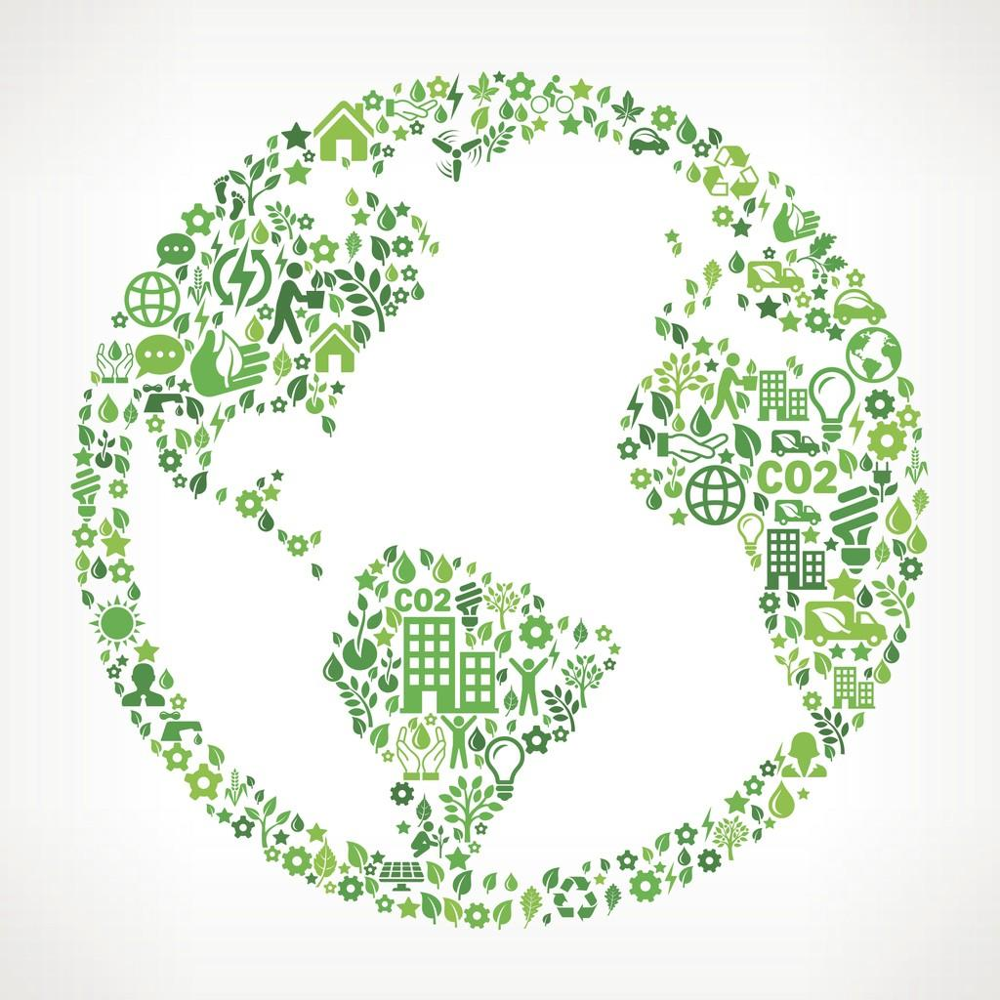

When historians look at the long span of our human history, they try to make sense of our arc of cultural evolution by breaking it up into phases: the agrarian era, the industrial era, the digital era, and so forth.
But of course, there are multiple perspectives we can use for this sort of exercise.
Perhaps the most important perspective to consider is the relationship of our human population to the rest of our world.
To start with, of course, we were hunter-gatherers. As such, we were just one more element of the natural world, one species among many. We might call this the Natural era – we were just one part of Nature. Our human population level was at about 10 million people back then.
In the Agrarian era, we domesticated other plants and animals in order to make food acquisition safer, more predictable, and more productive. We might call this an era of Environmental Concentration: we were just taking elements of our natural world – water, plants and animals – and concentrating them in specific areas where we could keep an eye on them. The result in terms of human population growth? A world population of 250 million people.
The Industrial era followed, in which we learned to perform large-scale extraction of resources from our planet, and use those resources for lighting, temperature control and transportation and for further resource manipulation. This era resulted in a human population level of six billion people by the end of the 20th century.
Of course, along with this industrialization, humans have had new and different sorts of effects on the environment. We've been able to extract huge volumes of natural resources from one part of the world and transport them to another. And our industrial processes produced unnatural and undesirable byproducts – often in the form of environmental pollution.
I call this the era of Environmental Accommodation because, as we learned of our environmental impacts, or as they became more severe, we worked out various sorts of accommodations – we moved the trash dump farther away, or we cleaned up a particular lake or river or site, or we removed a particular environmental hazard from a particular product (as when we developed unleaded gasoline).
And so our industrialization and our human population growth continued – with population levels approaching eight billion today – proceeding through a series of accommodations with our natural world, generally reacting one at a time to the first-order impacts of our industrial actions as we became aware of them.
And for a considerable period of time, arguably, this was an effective approach, as the benefits of further industrialization could be widely shared, while the undesirable side-effects could be minimized or shunted off to places where they would have little direct impact on humans.
However we're now seeing multiple indications that this era is coming to a close.
Global Climate Change is unlike the sorts of environmental impacts we're used to dealing with via accommodation.
First of all, it's global, not local – we can't create an accommodation by moving something somewhere else.
Next, it's a second-order impact that in turn causes many other impacts. For example, the burning of fossil fuels has increased the concentration of carbon dioxide in our atmosphere, which in turn traps more heat in our atmosphere, which in turn, as one example, is warming our oceans and causing massive die-offs of coral reefs around the world. But carbon dioxide is not the only contributor – there's also methane, nitrous oxide and CFCs. So, multiple causes and multiple cascading effects.
As another example, we have the phenomenon of species extinction. During the era of Environmental Accommodation, we responded by labeling some species as endangered, and taking steps to protect them. But now a recent report from the United Nations tells us that around 1 million species of plants and animals are threatened with extinction, with the end of the line coming within decades. We can't respond to the dangers threatening all of these species via one-off accommodations – it's just not practical.
And then, just to provide one more example, we have groundwater depletion. As irrigation increases in order to maximize agricultural output, we are drawing more water out of our aquifers than is being replaced by natural means, ultimately resulting in shortages of usable water for human consumption and for agriculture – and further increasing the strength and frequency of wildfires.
The longer we look at environmental problems such as these, the more we realize that it would be impossible to prevent the negative effects of all of these just by scaling up the number and size and speed of our accommodations. Continuing to play whack-a-mole simply won't cut it.
Many if not most scientists have acknowledged that we are seeing the end of one era and the beginning of another, which they are calling the Anthropocene, based on overwhelming global evidence that atmospheric, geologic, hydrologic, biospheric and other earth system processes are now altered by humans.
In other words, due to our increased numbers, and our increased discovery and application of technology, the force having the biggest impact on Earth and its systems is the human race.
At this point, it begins to appear that the only way to effectively deal with our human activities and their effects on our planet is to take a systems approach – in other word, to view our entire planet, including humans, other species, and all of our natural resources – as a single system that we humans are responsible for managing.
Of course this transition from one-off accommodations to a global systems approach represents a huge shift in our thinking. And naturally the need for such a massive change in how we think is bound to generate a ton of resistance.
Our current US president, Donald Trump, is a great example of this. His thinking about the environment is clearly based on the strategy of environmental accommodation. He views each policy decision as a one-off issue, gives industry the benefit of the doubt when it comes to delivering social benefits, and assumes that any negative consequences can be dealt with down the road through some sort of cleanup effort.
So when we ask how it is that Trump and his cohort can deny the reality of climate change in the face of overwhelming evidence, the answer becomes easy: for Trump and many others, it's not just a question of accepting a few new scientific facts, but of making a massive change in their entire way of thinking. And so Trump represents not a step forward to our inevitable, unavoidable future, but a desperate, last-ditch attempt to hang on to the way things worked in the past.
What do we need to do to support this shift in thinking? Luckily, we're not talking about the end of capitalism or any other sort of equally dramatic revolution.
On the other hand, we do need to make a more intentional effort to place a higher societal value on actions that benefit our communities as a whole, rather than focusing almost exclusively on benefits for consumers and capitalists, as we're doing today.
Here are the five primary ways in which we can ease this transition.
Industry and NGOs and individuals have roles to play, but the scale and scope of the needed efforts will require the sorts of funding and long-term commitments that can only be made by government.
We need scientists and policy experts to collaborate globally in order to collect the needed data, draw the appropriate conclusions, and make the needed technical and policy recommendations.
Despite the input from the best minds on the subject, figuring out how to manage our entire Earth as a single system is not something that any of us knows how to do. We will need to try things, then see the results, then quickly adjust our approaches based on our latest learnings. This does not mean that our “experts” don't know anything; it just means that no one has all the answers when trying to solve a novel, complex problem.
In many ways our current approach has been to sweep environmental problems under the rug and hope that someone else will deal with them a little further down the road.
In order to create a sustainable future for ourselves and our children, we will need to accept that, in one way or another, those costs need to be paid here and now.
Our total environmental impact is equal to our impact per capita times the size of our total population.
Management of a total environmental system will have to look at adjustments to both variables: we will need to reduce the impact per person, but also gradually reduce the total number of humans on the planet.
We have to change our way of thinking about who we are, and our relationship to the planet on which we reside. Humans and human-built systems are now competing with – and often overwhelming – natural systems that have evolved over millennia. We have to take responsibility as a species, not only for our own future, but for the future of our planet. This change in thinking won't be easy. We can close our eyes and resist the change if we'd like. But the change will be coming, whether we want it or not, and putting it off won't make it any easier.